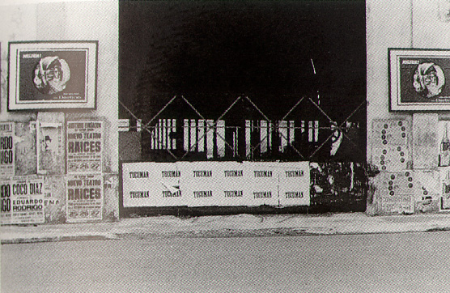

|
Editor's Note:
"Tucuman Arde" is the name of a project executed by a collective of artists in Argentina in 1968. The artists conceived of art as an effective instrument for social change, and through the Tucuman Arde project they sought to bring the distressed social conditions of the Tucuman province to the attention of a large public. The project was conceived of as an intervention in mass communication, a circuit of counterinformation against the official one of the dictatorship.
A videotape about at the Queens Museum in New York resituating this important work in the context of Conceptual Art. In her essay "Escape Attempts," Lucy Lippard had already pointed to the importance of the "Rosario group" as a model of a politicized conceptual art practice (in Ann Goldstein and Anne Rorimer, eds., Reconsidering the Object of Art: 1965-1975, Museum of Contemporary Art and MIT Press, Los Angeles, 1995). The catalogue for the Queens exhibition includes information on the Tucuman Arde project, and an essay from the 1968 exhibition is included in Alexander Alberro and Blake Stimson's anthology Conceptual Art: A Critical Anthology (MIT Press, 1999).
To further disseminate information about this important early instance of activist conceptual art, Part reproduces a transcription of the English-language subtitles from the videotape shown at the exhibition.
TUCUMAN ARDE
Original language: Spanish
Based on an idea of Maria Jose Herrera
Directed by Mariana Marchesi
Script by Belen Garcia
Edited by Rafael Menendez
Research: Maria Jose Herrera, Paula Casajus, Mariana Marchesi
Produced by Museo Nacional de Bellas Artes (Buenos Aires), Academia de Sur (Buenos Aires),
Queens Museum of Art (New York), Fundacion Antorchas (Buenos Aires)

Tucumán Arde
"La obra de arte debe surgir de la relacion consciente entre la posicion estetica del artista y su posicion ideologica."
Juan Pablo Renzi
(A work of art must emerge from the conscious relationship between the artist's aesthetic position and his ideological one.)
1968 was the year of one of the most radicalized aesthetic manifestations of the Argentine artistic field. In an effort to create a new language for the avant-garde, a group of artists conceived "Tucumán Arde," a work that exceeded traditional artistic practice, while blending with conflicts of a frank ideological content. Its object was to allow the emergence of art as the scene for political activity.
Towards the middle of the decade, Argentina could see the fading of the illusion of the )desarrolista) program. Its problems were manifested by workers' demands, frozen salaries, and monetary devaluations. In 1966, General Juan Carlos Onganía headed a coup d'etat, [a] self-proclaimed Argentine Revolution.
During the dictatorship, the country witnessed the dissolution of political life. The Armed Forces were ordered to prevent the diffusion of adverse political programs, and to smother any possible civilian uprising. Universities were intervened and an implacable attack against the union movement was unleashed.
The government's economic measures held back exportation, froze salaries and had a clear intention of expediting the introduction of foreign capital. The province of Tucumán in particular was turned into the experimental center of the new economic model applied by the government.
On November 10th, the President, in full use of his legislative faculties, sanctioned law 17010, creating the Tucumán Operative committee proposed by minister of economy Salimei as an effective instrument of the military government to reactivate the economy of Tucumán which up to then was based on the sugar mills.
But diversifying production and the supposed creation of new industries just masked the serious problems brought about by the continuous closing of sugar mills. Argentina witnessed an accelerated process of impoverishment that the government pretended not to see. The Tucumán Operative soon turned into a Silence Operative, which distorted and confounded the grievous situation that the northern province suffered.
In a decade marked by great ideals, when violence was seen as a proper means to obtain goals, different political and cultural alternatives emerged, which would find echo in Argentina. The decade had been inaugurated by the Cuban revolution, a phenomenon of decolonization that brought about a deep reconsideration of political thought. A revolution developed in Latin America possessed a special aura upon which Argentine intelligentsia had constructed a powerful image: that of the national anti-imperialist revolution Nine years later, in Mary 1968, Parisian students revolted against an entire cultural and social system, vindicating both the Cuban legend and, in general, all Third World liberation struggle.
A new role is born for the artist, who greatly adopts, the position of a sniper. From the street, a conquered space, the agitator artists place their bets on the transforming power of art. By means of irony, provocation, the absurd, they point out the alienation of man in a society regulated by the image constructed by the media. Violence was implicit as much in the will to destroy a certain socio-political system as in the linguistic breaches native to the avant-garde which, trying to link art and life, favored the discredit of traditional artistic practices accused of lack of commitment to reality. Thus, a complex relationship between art and politics was established in the '60s.
The crisis that Argentina was going through demanded a radical awareness in the intellectual sectors. The Di Tella Institute, an organization in charge of modernizing culture throughout the decade started to weaken. The depletion of the eminently formal language of the avant-garde was attended by the censorship exercised on all manifestations of culture. The artistic field responded giving way to bold aesthetic-political actions, which emphasized the meaning and context beyond the forms. However, despite the explicit shock and violence of these manifestations, the system seemed to absorb all criticism rapidly, minimizing the radical nature of these works.
This feeling collective in a great extent, led a group of artists to meet in Rosario in what was called "First Encounter of Avant-Garde Art." There a "new kind of work" was expressed which had to be effective on a social level, eliminating the distinction between intellectuals, artists, and technicians.
"Our function as intellectuals in society means ending with the ‘distant’ position of the artist, beyond class struggle, and its incorporation as one of the themes of our own realization." These statements took on the tone of a manifesto, and culminated in the organization of Tucumán Burns, the production of a model for revolutionary art. A work that would accuse rather than comment on reality. A collective work that, eliminating the narcissistic, individuality of the artist, would question the autonomy of art, and would be distributed within the struggling class.
The framework for its action was provided by a fresh political alliance between art and union members promoted by the CGT de los Argentinos, a splinter group of the labor central created months before, when agreements between labor leaders and the de facto government were denounced. Raimundo Ongaro, leader of the printing workers, was proclaimed its president. By that time, the military government had already done away with the right to strike and demonstrations. Meanwhile, the cost of living continued to increase.
The CGT de los Argentinos was presented as a revolutionary cultural center, an intellectual forum where the country's liberation or dependence was debated. Since its creation, it tried to create a coalition between intellectuals, workers, and the progressive clergy. Part of its program, called the May 1st Program, was to overcome the Tucumán crisis and the policy which had originated it.
"How then will we, the artists, avoid continuing to be the servants of the bourgeoisie? In the contact and participation beside the most distinguished and combative activists, putting our creative militancy and our militant creativeness at the service of the people's organization for the struggle." (Tucumán Arde Declaration–Buenos Aires Noviembre 1968)
Thus the artists, by using the political machinery contributed by the CGTA, conceived a work which, while based on social reality, marked and criticized it from a position judged unavoidable, that of the "cultural militant": the artist as social actor, who channels his political commitment through his work. In the '60s, the explosion of massive communication media significantly marked everyday life. As it had never done before, the artistic field generated great attention from the media. Magazines such as Primera Plana and Confirmado built a social myth around the avant garde artist and his way of life.
In 1966, Roberto Jacoby, Eduardo Costa, and Raul Escari proposed the creation of a new genre: "the art of mass media," which used these massive media as a new artistic medium of huge creative potential, but which, at the same time, they wanted to denounce as a powerful weapon to manipulate consciences. Researchers such as Oscar Masotta and Eliseo Verón supported these experimental manifestations which studied the social circulation of the speeches.
"We use neither paintbrushes nor oils, but concrete reality as artistic material, by means of communication media. Precisely, the undertaking we set out in Tucumán is directed to the public. We strive for the work to develop in the mass media," they stated to the press.
Tucumán Arde was conceived to be carried out in three stages. The first consisted of the investigation and recording of the testimonial material which would be the basis of the exhibition. For that purpose, artists from Rosario and Buenos Aires made a first trip to Tucumán to gather information about the region's socio-economic conflicts and establish the first contacts to assure their goals. From the results obtained, a larger group of artists made a second trip to film, photograph, and record proof supporting their accusations. In order to achieve these goals, it was necessary to conceal the political aims of the work, so as to make the artist's task easier. One group called a press conference held at the provincial Fine Arts Museum, thus conveying different information. Others contacted union and student leaders, as well as those workers directly affected by the closure of sugar mills. The statements obtained were recorded and filmed. The declarations concentrated on social aspects such as: infant mortality, poor sanitary conditions, and school desertion. The police, becoming aware of their true intentions, warned the population not to communicate with the artists. In many places they were even forbidden to film or take photos. The press from Rosario, Santa Fe and Tucumán published in detail the press releases the artists sent to trigger the media. As soon as the artists finished their activities in Tucumán, a second conference was called. In order to accomplish political repercussion, the true meaning of the work was revealed.
Meanwhile, in Rosario and Santa Fe, an intense campaign of enigmatic wall paintings [posterings] were done, a typical strategy of advertising and political militancy. The streets were literally papered with signs reading " Tucumán" with no other explanation. Soon another series of wall paintings replaced the first one adding drama to the unknown slogan: Tucumán Arde. Also, in universities, at the exits of cultural events, and in means of transportation, leaflets were handed out. In some movie theaters, the enigmatic words appeared on the tickets or even on the screen before the movies began. With the posters First Avant Garde Art Biennial as ambiguous conclusion of the advertising process the first stage was closed. The name, ironically, anchored the work in the avant-garde art tradition which it had attempted to question. But in the beginning, nothing seemed to connect the slogan Tucumán Arde with the advertised Biennial.
The second stage of Tucumán Arde consisted of the exhibition itself. During the first six days of November 1968, the seat of the CGT union in Rosario was turned into an uncommon stage: the entrance floor was carpeted with the names of the sugar mill owners, and their relationship to political power. Visitors had to walk on these names. Its walls were covered with newspaper clippings which reported the situation in Tucumán, showing what the media dodged: the conflict in political interests of the crisis. Besides, the testimony of settlers, workers, and rural teachers were exhibited as well as photomurals. Short movies and audiovisuals were also shown. Meanwhile, loudspeakers broadcast recordings of interviews [with] union leaders and sugar cane workers. The lights of the place were doused at frequent and regular intervals. The frequency of the blackouts, every two minutes, symbolized the average time between the deaths of Tucumán children as established by the province's child mortality census.
Among the present, bitter coffee was served, a clear reference to the sugar production crisis. As the days went by, new material was added to the exhibition. The result of the interviews carried out among the public or diverse spontaneous collaborations. Far from limiting themselves to the public of only one art gallery, they addressed society as a whole: to the working class, by the action in unions and sugar mills; to the ruling class, criticizing their system of government; to the middle class, by the special use made of the mass communication.
"The objective of Tucumán Arde is to expose, by means of the reflexive use of the information media, the contradictions of the Argentine government and the property-owning class regarding the closure of the Tucumán sugar mills, and the grave consequences that are common knowledge" (Press document from Tucumán Arde: Rosario)
On November 25th, the same group of artists who had organized the exhibition in Rosario, reinstalled it at the Buenos Aires seat of the dissident CGT. In Buenos Aires, a huge banner barred the entrance door [in the film it appears to hang over it]: VISIT TUCUMAN GARDEN OF MISERY. An ironic reference to the traditional welcoming slogan: " Tucumán, garden of the Republic." The exhibition was enlivened with music as was usual in numerous shows at that time. But traditional zambas were played in ironic opposition to the optimism of the popular Tucumán singer, Palito Ortega, then very successful in Buenos Aires. Inside the place, a group of workers and university students handed out an 18-page brochure: a study carried out by sociologists explaining the causes of the Tucumán crisis, and the strategy of government policy.
On the walls, in keeping with the objective of over- and counter-informing as a way of unalienating the spectators, photographic reproductions of newspaper clips from all over the country showed Minister Salimei, official voice of the Argentine Revolution, explaining how it contributed to the welfare of Tucumán. "This is how the Revolution will solve a problem not exclusively local but that affects the nation as a whole. While the transformation process is carried out, no worker will lose his job in the sugar mills." In opposition to this discourse, other newspaper clippings were exhibited bearing witness to police repression and broken up demonstrations.
A third stage was planned as the closing of the information circuit, a sort of synthesis and evaluation of all the activities. Due to [the] adverse situation the country was going through, and the Buenos Aires seat [?] which should have lasted 15 days, but was cancelled a few hours after it was inaugurated, this third stage was carried out only partially. Censorship acted once again in the face of a frank showing of the motives of power.
" Tucumán Arde used art for the sake of politics. Most of conceptual art and certain manifestations of `contemporary political art' use politics as the subject to do art." (León Ferrari, Cuba, 1973)
It was presented as a work destined to unalienate and to create conscience in a broader public than that of the artistic circuit. It utilized all the formal resources of avant-garde art of the period, seeking participation as well as the public's commitment. It tried to escape the channels that depend on elite institutions, in an interdisciplinary manifestation enrolled in the tradition of critical art. It used mass communication media to camouflage itself and evade the censorship applied to all revolutionary art. It built a suitable situation to demonstrate through both overinformation and counterinformation strategies, that the media superimpose over reality, and thereby denounce the power of manipulation. It proposed itself as a programmatic model of a new art that implied that the artist should assume the role of protagonist and activist of social struggle.
However, the toughening of political reality, the limitations peculiar to the group's dynamics, added to the relativity of art's attainments as transforming agent, indicated the impossibility of setting model programs of aesthetic-political action. The death of art, so debated in that period, turned literal for the majority of artists who participated in this experience. Some stopped painting temporarily or definitely. Others, when facing the limits of art, decided to move on to direct action, in a complete absorption of aesthetic praxis by political praxis.
Tucumán Arde uncovered the ephemeral link between art and politics, the implicit paradoxes of this relationship, and the profound crisis faced by the avant-garde, which brought about consequences so strong as not to allow such experiences in the future. It was the climax of a utopian stage which changed the manner of making political declarations through art.
CREDITS:
Las fotografias que formaron parte de la muestra, fueron cedidas por los artistas que participaron de la misma
Participaron de Tucumán Arde:
Ma. Elvira de Arechavaia, Beatriz Balvé, Graciela Borthwick, Aldo Bortolili, Graciela Carnevale, Ricardo Carreira, Jorge Cohen, Rodolfo Elizalde, Noemi Escandell, Eduardo Favario, León Ferrari, Emilio Ghilioni, Edmundo Ghiura, Ma. Teresa Gramuglio, Martha Greiner, Roberto Jacoby, Jose Ma. Lavarello, Sara López Dupuy, Rubén Naranjo, David de Nully Braun, Margarita Paksa, Raúl Pérez Cantón, Oscar Pidusiwa, Estela Pomerantz, Norberto Púzzolo, Juan Pablo Renzi, Jaime Rippa, Nicolás Rosa, Eduardo Ruano, Carlos Schork, Nora de Schork, Domingo Sapia, Pablo Suárez,
Idea original: Maria Jose Herrera
Direccion: Mariana Marchesi
Montaje: Rafael Menendez
Guion: Belen Gache
Investigacion: Maria Jose Herrera, Mariana Marchesi, Paula Casajus
Locucion: Ricardo Diaz Mourelle
Musica Original: Joan Prim
Tema: Verano Porteno, Astor Piazzolla
Material Filmico:
Camino hacia la muerto del viejo Reales, dir. Gerardo Vallejos
La Hora de los Hornos, dir. Pino Solanas
La República Perdida, dir. Miguel Perez
[Production and post-production facilities credits omitted]
Archivos:
General de la Nación, I.N.C.A.A., Cinemateca, Universidad Torcuato Di Tolta[?], Oscar Bony, Graciela Carnevale, Eduardo Costa, Noemi Escandell, Jorge y Marion Holfl[?], León Ferrari, Edgardo Gimenez, Roberto Jacoby, Lea Lublin, Marta Minujin, Margarita Paksa, Horacio Tarcus
[Agradecimientos omitted]
[co-production]
Museo Nacional de Bellas Artes, Buenos Aires
Queens Museum of Art, New York 1999
titles transcribed for Part by Alan Moore
|
|